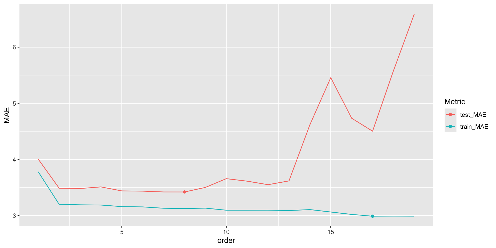
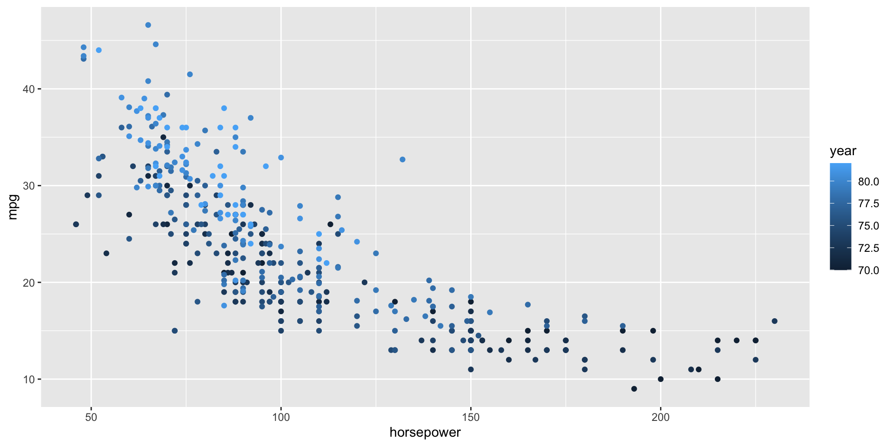
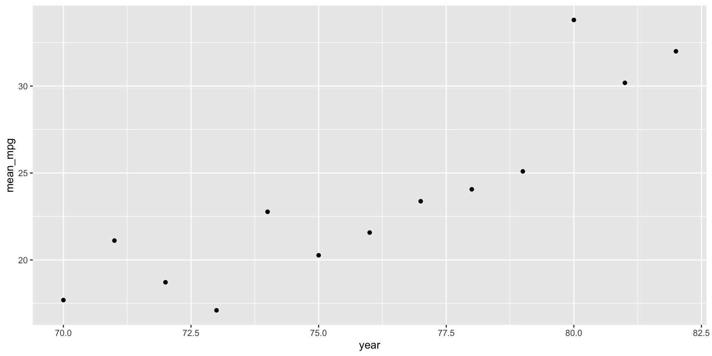

Overfitting
Settling In
- Sit in your NEW randomly assigned group
- Introduce yourselves and choose a team name (you’ll need this later)
- Review the finalized Course Syllabus
- Catch up on any Slack messages you might have missed
- Prepare to take notes:
- Locate the QMDs for today’s activity (see the Course Schedule)
- Save these documents in your “STAT 253 > Notes” folder
- You can open the Part 1 QMD…
- .. but DO NOT open Part 2 (yet)
Learning Goals
- Explain why training/in-sample model evaluation metrics can provide a misleading view of true test/out-of-sample performance
- Implement testing and training sets in R using the
tidymodelspackage
Small Group Discussion
To start class today, we’re going to do a Model Evaluation Experiment!
Directions
Let’s build and evaluate a predicted model of an adult’s height (\(y\)) using some predictors \(x_i\) (e.g., age, weight, etc.).
- Introduce yourself in whatever way you feel appropriate and check in with each other as human beings
- Come up with a team name
- Work through the steps below as a group, after you are told your group number
- Each group will be given a different sample of 40 adults
- Start by predicting
height(in) usinghipcircumference (cm) - Evaluate the model on your sample.
- Be prepared to share your answers to:
- How good is your simple model?
- What would happen if we added more predictors?
Questions
Goal:
Let’s build and evaluate a predictive model of an adult’s height (\(y\)) using some predictors \(x_i\) (eg: age, height, etc).
Since \(y\) is quantitative this is a regression task.
There are countless possible models of \(y\) vs \(x\). We’ll utilize a linear regression model:
\[y = \beta_0 + \beta_1 x_1 + \cdots + \beta_p x_p + \varepsilon\]
- And after building this model, we’ll evaluate it.
Data: Each group will be given a different sample of 40 adults.
Model building: Build a linear regression model of height (in) by hip circumference (cm).
Solution
Each group will have slightly different coefficients because they have different samples of data.
#This is an example with one of the samples
humans <- read.csv("https://kegrinde.github.io/stat253_coursenotes/data/bodyfat50.csv") %>%
filter(ankle < 30) %>%
rename(body_fat = fatSiri)
# STEP 1: model specification
lm_spec <- linear_reg() %>%
set_mode('regression') %>%
set_engine('lm')
# STEP 2: model estimation
model_1 <- lm_spec %>%
fit(height ~ hip, data = humans)
# Check out the coefficients
model_1 %>%
tidy()# A tibble: 2 × 5
term estimate std.error statistic p.value
<chr> <dbl> <dbl> <dbl> <dbl>
1 (Intercept) 52.5 7.68 6.84 0.0000000460
2 hip 0.179 0.0778 2.30 0.0272 Model evaluation: How good is our model?
Solution
Again, each group will have slightly different answers here because they have different samples of data.
# A tibble: 1 × 12
r.squared adj.r.squared sigma statistic p.value df logLik AIC BIC
<dbl> <dbl> <dbl> <dbl> <dbl> <dbl> <dbl> <dbl> <dbl>
1 0.125 0.101 2.26 5.29 0.0272 1 -86.1 178. 183.
# ℹ 3 more variables: deviance <dbl>, df.residual <int>, nobs <int># Use your model to predict height for your subjects
# Just print the first 6 results
model_1 %>%
augment(new_data = humans) %>%
head()# A tibble: 6 × 21
.pred .resid fatBrozek body_fat density age weight height adiposity
<dbl> <dbl> <dbl> <dbl> <dbl> <int> <dbl> <dbl> <dbl>
1 70.3 -1.09 24.7 25.4 1.04 43 177 69.2 26
2 70.8 -1.52 22 22.5 1.05 38 187. 69.2 27.5
3 70.2 -1.19 9.4 8.8 1.08 29 161. 69 23.8
4 68.9 4.58 7.1 6.3 1.08 49 153. 73.5 19.9
5 69.3 2.91 9.9 9.4 1.08 23 160. 72.2 21.6
6 70.2 -2.48 22.7 23.3 1.05 52 167 67.8 25.6
# ℹ 12 more variables: fatFreeWeight <dbl>, neck <dbl>, chest <dbl>,
# abdomen <dbl>, hip <dbl>, thigh <dbl>, knee <dbl>, ankle <dbl>,
# biceps <dbl>, forearm <dbl>, wrist <dbl>, hipin <dbl># Calculate the MAE, i.e. typical prediction error, for your model
model_1 %>%
augment(new_data = humans) %>%
mae(truth = height, estimate = .pred)# A tibble: 1 × 3
.metric .estimator .estimate
<chr> <chr> <dbl>
1 mae standard 1.88Reflection
In addition to hip circumference, suppose we incorporated more predictors into our model of height. What would happen to \(R^2\)? To the MAE?
Solution
\(R^2\) would increase and MAE would decrease.Exercises (Part 1)
Directions
- Open the Part 1 QMD file.
- Take 5 minutes to complete exercises 1 and 2 (choosing one of three models).
- We’ll pause for a few minutes to discuss each group’s answers to these exercises.
- Then, and only then, you can finish exercises 3 - 5.
REMINDERS:
- Be kind to yourself/each other. You will make mistakes!
- Collaborate:
- actively contribute to discussion (don’t work on your own)
- actively include all group members in discussion
- create a space where others feel comfortable making mistakes and sharing their ideas
- stay in sync
Questions
- Select a model
Consider 3 different models of height, estimated below. As a group, use your data to choose which is the best predictive model of height. Calculate the MAE for this model.
# height vs hip
model_1 <- lm_spec %>%
fit(height ~ hip, data = humans)
model_1 %>%
tidy()
# height vs hip & weight
model_2 <- lm_spec %>%
fit(height ~ hip + weight, data = humans)
model_2 %>%
tidy()
# height vs a lot of predictors (AND some interaction terms)
model_3 <- lm_spec %>%
fit(height ~ chest * age * weight * body_fat * abdomen + hip + thigh + knee + ankle + biceps + forearm + wrist, data = humans)
model_3 %>%
tidy()Solution
Will vary by group. MAE is calculated here for each model.
# Build the models
model_1 <- lm_spec %>%
fit(height ~ hip, data = humans)
model_2 <- lm_spec %>%
fit(height ~ hip + weight, data = humans)
model_3 <- lm_spec %>%
fit(height ~ chest * age * weight * body_fat * abdomen + hip + thigh + knee + ankle + biceps + forearm + wrist, data = humans)
# Evaluate the models
model_1 %>%
augment(new_data = humans) %>%
mae(truth = height, estimate = .pred)# A tibble: 1 × 3
.metric .estimator .estimate
<chr> <chr> <dbl>
1 mae standard 1.88# A tibble: 1 × 3
.metric .estimator .estimate
<chr> <chr> <dbl>
1 mae standard 1.67# A tibble: 1 × 3
.metric .estimator .estimate
<chr> <chr> <dbl>
1 mae standard 1.53e-10- Share your results
Only when you’re done with exercise 1:- Open this “Top Model Competition” Google Doc.
- Record your team name.
- Record which model you chose (1, 2, or 3).
- Record the MAE for your model.
- WAIT. Don’t keep going.
Don’t peak
What do you know?! 40 new people just walked into the doctor’s office and the doctor wants to predict their height:
- Intuition
Consider using your model to predictheightfor these 40 new subjects. On average, do you think these predictions will be better or worse than for your original patients? Why?
- How well does your model do in the real world?
Use your model to predictheightfor the new patients and calculate the typical prediction error (MAE). Record this in the Google sheet.
Solution
# Predict height (assume, for example, I choose model_1)
model_1 %>%
augment(new_data = new_patients) %>%
head()# A tibble: 6 × 21
.pred .resid fatBrozek body_fat density age weight height adiposity
<dbl> <dbl> <dbl> <dbl> <dbl> <int> <dbl> <dbl> <dbl>
1 71.5 -1.96 27.1 28 1.04 62 201. 69.5 29.3
2 70.4 -0.141 20.9 21.3 1.05 42 163 70.2 23.3
3 69.7 -0.497 26.1 27 1.04 72 168 69.2 24.7
4 69.1 -1.39 4.1 3 1.09 35 152. 67.8 23.4
5 68.5 -2.99 1.9 0.7 1.1 35 126. 65.5 20.6
6 71.9 -1.91 31 32.3 1.03 57 206. 70 29.5
# ℹ 12 more variables: fatFreeWeight <dbl>, neck <dbl>, chest <dbl>,
# abdomen <dbl>, hip <dbl>, thigh <dbl>, knee <dbl>, ankle <dbl>,
# biceps <dbl>, forearm <dbl>, wrist <dbl>, hipin <dbl># Calculate the MAE for model_1
model_1 %>%
augment(new_data = new_patients) %>%
mae(truth = height, estimate = .pred)# A tibble: 1 × 3
.metric .estimator .estimate
<chr> <chr> <dbl>
1 mae standard 1.73# Calculate the MAE for model_2
model_2 %>%
augment(new_data = new_patients) %>%
mae(truth = height, estimate = .pred)# A tibble: 1 × 3
.metric .estimator .estimate
<chr> <chr> <dbl>
1 mae standard 1.68# Calculate the MAE for model_3
model_3 %>%
augment(new_data = new_patients) %>%
mae(truth = height, estimate = .pred)# A tibble: 1 × 3
.metric .estimator .estimate
<chr> <chr> <dbl>
1 mae standard 105.- Reflection
In summary, which model seems best? What’s the central theme here?
Notes
Overfitting
When we add more and more predictors into a model, it can become overfit to the noise in our sample data:
- our model loses the broader trend / big picture
- thus does not generalize to new data
- thus results in bad predictions and a bad understanding of the relationship among the new data points
Preventing overfitting: training and testing
- In-sample metrics, i.e. measures of how well the model performs on the same sample data that we used to build it, tend to be overly optimistic and lead to overfitting.
- Instead, we should build and evaluate, or train and test, our model using different data.
R Code
This section is for future reference. It is a summary of code you’ll learn below for creating and applying training and testing data. Throughout, suppose we wish to build and evaluate a linear regression model of y vs x1 and x2 using our sample_data.
Split the sample data into training and test sets
# Set the random number seed
set.seed(___)
# Split the sample_data
# "prop" is the proportion of data assigned to the training set
# it must be some number between 0 and 1
data_split <- initial_split(sample_data, strata = y, prop = ___)
# Get the training data from the split
data_train <- data_split %>%
training()
# Get the testing data from the split
data_test <- data_split %>%
testing()Build a training model
Use the training model to make predictions for the test data
Evaluate the training model using the test data
Exercises (Part 2)
Directions
- Open the Part 2 QMD file
- Same directions as before:
- Be kind to yourself/each other
- Collaborate
- We will not discuss these exercises as a class. Be sure to ask questions as I walk around the room.
Questions
The following exercises are inspired by Chapter 5.3.1 of ISLR.
Let’s use the cars data to compare three linear regression models of fuel efficiency in miles per gallon (mpg) by engine power (horsepower):
Goal
Let’s evaluate and compare these models by training and testing them using different data.
- 155 review: set.seed()
Run the two chunks below multiple times each. Afterward, summarize what set.seed() does and why it’s important to being able to reproduce a random sample.
Solution
set.seed() is used to create the same “random numbers” each time a random function is called.
Note that is if you want to get exactly the same random result, set.seed() needs to be run right before the call to random function, every time.
It is important so that you can reproduce the same random sample every time you knit your work.
There might be different results across computers/platforms as they might be using different pseudo-random number generators. The most important thing is for your code to be consistent.- Training and test sets
Let’s randomly split our original 392 sample cars into two separate pieces: select 80% of the cars to train (build) the model and the other 20% to test (evaluate) the model.
Solution
# Set the random number seed
set.seed(8)
# Split the cars data into 80% / 20%
# Ensure that the sub-samples are similar with respect to mpg
cars_split <- initial_split(cars, strata = mpg, prop = 0.8)
cars_split<Training/Testing/Total>
<312/80/392># Get the training data from the split
cars_train <- cars_split %>%
training()
# Get the testing data from the split
cars_test <- cars_split %>%
testing()
# The original data has 392 cars
nrow(cars)[1] 392[1] 312[1] 80- Reflect on the above code
- Why do we want the training and testing data to be similar with respect to
mpg(strata = mpg)? What if they weren’t? - Why did we need all this new code instead of just using the first 80% of cars in the sample for training and the last 20% for testing?
Solution
- Suppose, for example, the training cars all had higher
mpgthan the test cars. Then the training model likely would not perform well on the test cars, thus we’d get an overly pessimistic measure of model quality. - If the cars are ordered in some way (eg: from biggest to smallest) then our training and testing samples would have systematically different properties.
- Build the training model
Solution
# STEP 1: model specification
lm_spec <- linear_reg() %>%
set_mode("regression") %>%
set_engine("lm")
# STEP 2: model estimation using the training data
# Construct the 19th order polynomial model using the TRAINING data
model_19_train <- lm_spec %>%
fit(mpg ~ poly(horsepower, 19), data = cars_train)- Evaluate the training model
Solution
# How well does the training model predict the training data?
# Calculate the training (in-sample) MAE
model_19_train %>%
augment(new_data = cars_train) %>%
mae(truth = mpg, estimate = .pred)# A tibble: 1 × 3
.metric .estimator .estimate
<chr> <chr> <dbl>
1 mae standard 2.99# How well does the training model predict the test data?
# Calculate the test MAE
model_19_train %>%
augment(new_data = cars_test) %>%
mae(truth = mpg, estimate = .pred)# A tibble: 1 × 3
.metric .estimator .estimate
<chr> <chr> <dbl>
1 mae standard 6.59- Punchline
The table below summarizes your results fortrain_model_19as well as the other two models of interest. (You should confirm the other two model results outside of class!)
| Model | Training MAE | Testing MAE |
|---|---|---|
mpg ~ horsepower |
3.78 | 4.00 |
mpg ~ poly(horsepower, 2) |
3.20 | 3.49 |
mpg ~ poly(horsepower, 19) |
2.99 | 6.59 |
Answer the following and reflect on why each answer makes sense:
- Within each model, how do the training errors compare to the testing errors? (This isn’t always the case, but is common.)
- Why about the training and test errors for the third model suggest that it is overfit to our sample data?
- Which model seems the best with respect to the training errors?
- Which model is the best with respect to the testing errors?
- Which model would you choose?
Solution
- the training errors are smaller
- the test MAE is much larger than the training MAE
- the 19th order polynomial
- the quadratic
- the quadratic
Code for the curious
I wrote a function calculate_MAE() to automate the calculations in the table. If you’re curious, pick through this code!
# Write function to calculate MAEs
calculate_MAE <- function(poly_order){
# Construct a training model
model <- lm_spec %>%
fit(mpg ~ poly(horsepower, poly_order), cars_train)
# Calculate the training MAE
train_it <- model %>%
augment(new_data = cars_train) %>%
mae(truth = mpg, estimate = .pred)
# Calculate the testing MAE
test_it <- model %>%
augment(new_data = cars_test) %>%
mae(truth = mpg, estimate = .pred)
# Return the results
return(data.frame(train_MAE = train_it$.estimate, test_MAE = test_it$.estimate))
}
# Calculate training and testing MSEs
calculate_MAE(poly_order = 1) train_MAE test_MAE
1 3.779331 4.004333 train_MAE test_MAE
1 3.199882 3.487022 train_MAE test_MAE
1 2.989305 6.592341# For those of you interested in trying all orders...
results <- purrr::map_df(1:19,calculate_MAE) %>%
mutate(order = 1:19) %>%
pivot_longer(cols=1:2,names_to='Metric',values_to = 'MAE')
results %>%
ggplot(aes(x = order, y = MAE, color = Metric)) +
geom_line() +
geom_point(data = results %>% filter(Metric == 'test_MAE') %>% slice_min(MAE)) +
geom_point(data = results %>% filter(Metric == 'train_MAE') %>% slice_min(MAE))
- Final reflection
- The training / testing procedure provided a more honest evaluation and comparison of our model predictions. How might we improve upon this procedure? What problems can you anticipate in splitting our data into 80% / 20%?
- Summarize the key themes from today in your own words.
Solution
This will be discussed in the next video!
- STAT 155 REVIEW: data drill
- Construct and interpret a plot of
mpgvshorsepowerandyear. - Calculate the average
mpg. - Calculate the average
mpgfor eachyear. HINT:group_by() - Plot the average
mpgbyyear.
Solution

mean(mpg)
1 23.44592# A tibble: 13 × 2
year mean_mpg
<dbl> <dbl>
1 70 17.7
2 71 21.1
3 72 18.7
4 73 17.1
5 74 22.8
6 75 20.3
7 76 21.6
8 77 23.4
9 78 24.1
10 79 25.1
11 80 33.8
12 81 30.2
13 82 32 # d
cars %>%
group_by(year) %>%
summarize(mean_mpg = mean(mpg)) %>%
ggplot(aes(y = mean_mpg, x = year)) +
geom_point()
- Digging deeper (optional)
Check out the online solutions for exercise 6. Instead of calculating MAE from scratch for 3 different models, I wrote a function calculate_MAE() to automate the process. After picking through this code, adapt the function so that it also returns the \(R^2\) value of each model.
Done!
- Knit your notes.
- Check the solutions in the course website.
- If you finish all that during class, start on Homework 2!
Wrap-Up
Finishing the Activity
- If you didn’t finish the activity, no problem! Be sure to complete the activity outside of class, review the solutions in the online manual, and ask any questions on Slack or in office hours.
- Re-organize and review your notes to help deepen your understanding, solidify your learning, and make homework go more smoothly!
After Class
- An R code video, posted under the pre-course materials for today’s class (see the “Schedule” page on this website), talks through the new code. This video is OPTIONAL. Decide what’s right for you.
- Continue to check in on Slack. I’ll be posting announcements there from now on.
- Upcoming due dates:
- CP3: due 10 minutes before our next class.
- There are two (short) videos to watch in advance.
- HW1 (Regression Model Evaluation): due next Tuesday at 11:59 pm
- Start today, even if you just review the directions and scan the exercises. Homework is not designed to be completed in one sitting!
- Invite others to work with you!
- Stop by office hours (preceptors or mine) with any questions
- CP3: due 10 minutes before our next class.